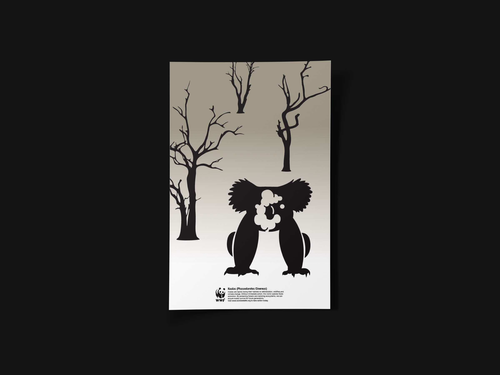
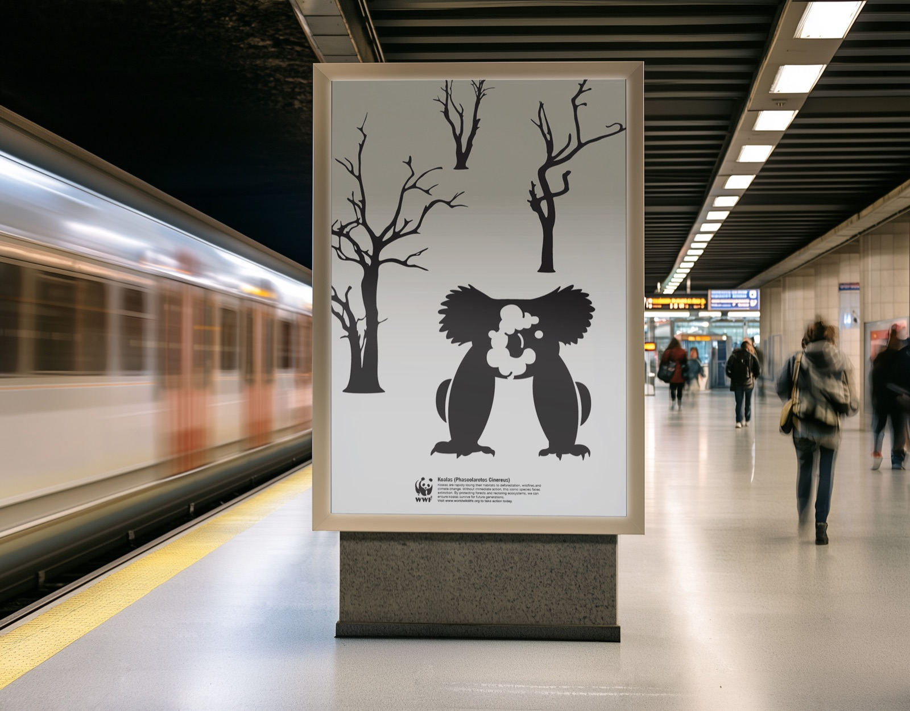

Disappearing Species

An environmental awareness poster using a black koala silhouette and cooling towers cut out of its body to connect endangered wildlife with industrial pollution and habitat loss.
- Deliverables
- Awareness poster, illustration
Inspired by a World Wildlife Fund brief, this project explores how an environmental issue can be communicated through a single image rather than a large amount of explanatory text.
I focused on the relationship between endangered wildlife and industrial activity, looking for a way to make that connection visible within the animal itself.
- Research into endangered species and environmental issues
- Concept development and sketches
- Illustration and negative-space studies
- Final awareness poster
Research and sketches



The poster places a solid black koala beneath two bare trees on a warm grey-to-cream background. Cooling towers and rising plumes are cut out of the koala's body in white, making the animal and the industrial structures read as one combined shape.
The negative space does more than create contrast: it connects the animal directly to the industrial imagery, suggesting that environmental damage and the loss of habitat cannot be separated. The trees reinforce the absence of a healthy natural setting without adding more competing imagery.
The WWF logo and a small block of supporting text sit in the bottom-left corner, leaving most of the page empty. With no additional decorative elements, the combined silhouette becomes the main argument of the poster. The limited palette keeps the image stark and directs attention to the relationship between wildlife and industry.